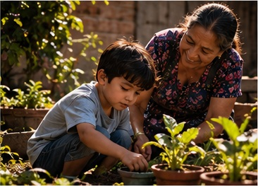

CAPÍTULO I
Un hogar lleno
de silencios.
Mateo nació en 2008 en San Miguel. Durante sus primeros 5 años de vida, hasta 2013, vivió con su madre, Elena, y su padre, Ricardo, en una casa modesta. En ese período aprendió el lenguaje, los hábitos del hogar y las primeras normas de convivencia, a través de lo que sus padres hacían y decían cada día. Su madre trabajaba muchas horas y su padre, atravesando dificultades personales y económicas, tenía problemas para expresar sus emociones.
No todo era tristeza: su madre le contaba historias antes de dormir y su abuela Rosa le enseñaba a cuidar las plantas del patio. Sin embargo, los conflictos familiares y la falta de comunicación le hicieron difícil expresar lo que sentía.
El lenguaje, los hábitos y las primeras normas de convivencia; también observó formas poco saludables de resolver los desacuerdos.

- CÓMO SE DIO LA SOCIALIZACIÓN
- Sus padres: mediante el ejemplo diario y la imitación le enseñaron a hablar, a comer en familia y a respetar normas básicas; el silencio de su padre le enseñó, sin proponérselo, a callar lo que sentía.
- Su madre y su abuela: con cuentos antes de dormir y el cuidado de las plantas del patio le transmitieron afecto, valores y responsabilidad.
ENTORNO PRINCIPAL Familia · Madre, padre y abuela · Valores, hábitos y afecto
TIPO DE SOCIALIZACIÓN Primaria · Aprendió el lenguaje, las normas del hogar y las primeras formas de expresar emociones
CONCEPTO DE LA CLASE La familia como primer grupo social y primer medio de control social informal; para Aristóteles, la primera comunidad del ser social
COMPRENDER EL PROCESO
Tres etapas.
Un aprendizaje continuo.
La socialización es el proceso por el cual aprendemos normas, valores, costumbres y comportamientos que nos permiten participar en la sociedad.
INFANCIA
Socialización primaria
Se desarrolla principalmente durante los primeros años de vida, cuando aprendemos las primeras normas, hábitos y formas de convivencia.
Su familia le enseñó el lenguaje, las costumbres del hogar, el respeto y las primeras maneras de expresar sus emociones.
Familia → primeros valores y hábitosAntes de entrar a la escuela, Mateo ya sabía cuándo hablar y cuándo callar en su casa: aprendió a saludar a los mayores, a decir «gracias» y a no interrumpir en la mesa. También aprendió, observando, que cuando había discusiones lo mejor era irse al patio con su abuela.
Lo que aprendió bien (el respeto, el cuidado) le sirvió toda la vida; lo que aprendió mal (callar las emociones) tuvo que desaprenderlo de adulto. Así, la socialización primaria deja huellas profundas, pero no definitivas.
ESCUELA Y OTROS GRUPOS
Socialización secundaria
Se amplía cuando la persona participa en espacios fuera del hogar y aprende nuevas reglas, roles y maneras de relacionarse.
La escuela, los docentes y sus amistades influyeron en su convivencia, su sentido de pertenencia, su responsabilidad y sus decisiones.
Escuela y grupos → roles y convivenciaEn la escuela y con sus amistades, Mateo aprendió dos conjuntos de reglas que no siempre coincidían: las de las aulas (puntualidad, tareas, respeto a los docentes) y las del grupo (aguantar burlas, no destacar, faltar juntos). Tuvo que elegir cuáles obedecer cuando no podía cumplir las dos.
En 2023, perder el proyecto escolar por sus ausencias le mostró que cada elección tenía un costo. Para él, esta etapa fue el lugar donde descubrió que pertenecer a un grupo no es lo mismo que ser uno mismo.
VIDA ADULTA Y VEJEZ
Socialización terciaria
Para este trabajo, se presenta como la adaptación a nuevos entornos y roles durante la vida adulta y la vejez (trabajo, matrimonio, paternidad, jubilación y rol de abuelo), de acuerdo con el enfoque que se utilice en clase.
El trabajo, su matrimonio, la crianza de sus hijos y, más tarde, su papel de abuelo le exigieron aprender nuevos roles a lo largo de toda su vida adulta. Allí desarrolló autonomía, ética y compromiso social, y pasó de ser educado a ser quien educa.
Trabajo, familia propia y vejez → nuevos roles y transmisiónEn 2026, en su primer empleo, Mateo tuvo que aprender reglas que nadie le había enseñado antes: cómo hablarle a un cliente molesto, cómo pedir ayuda a un jefe, cómo cumplir un contrato. Años después tuvo que aprender otras: cómo ser esposo, cómo ser padre y cómo ser jefe.
Ya mayor, aprendió una más: ser abuelo y aceptar que ya no era quien sostenía la casa. La socialización terciaria no terminó nunca; cada nuevo rol le pidió aprender de nuevo y, a su vez, enseñar lo que ya sabía.
Nota académica: el uso del término “socialización terciaria” puede variar según el marco teórico de cada curso. Esta sección debe ajustarse a la definición utilizada por el docente si difiere de la aquí presentada.